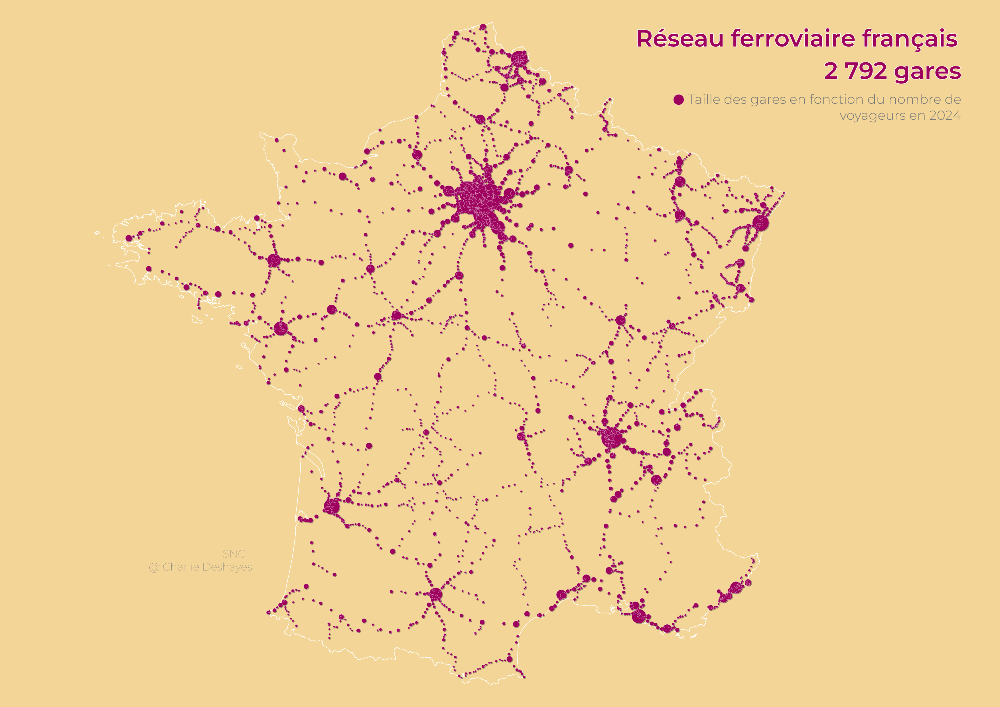
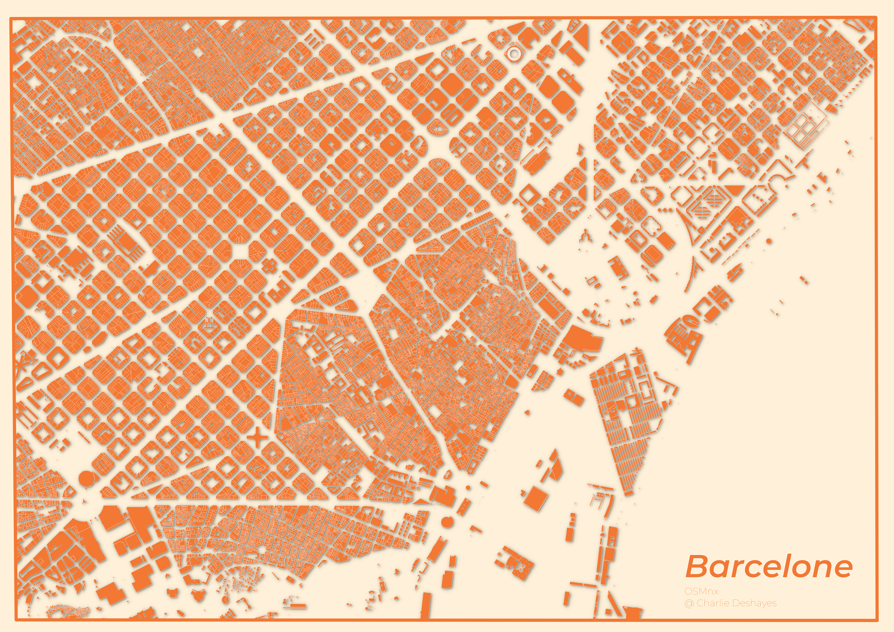
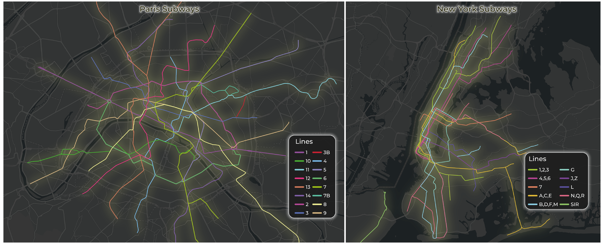
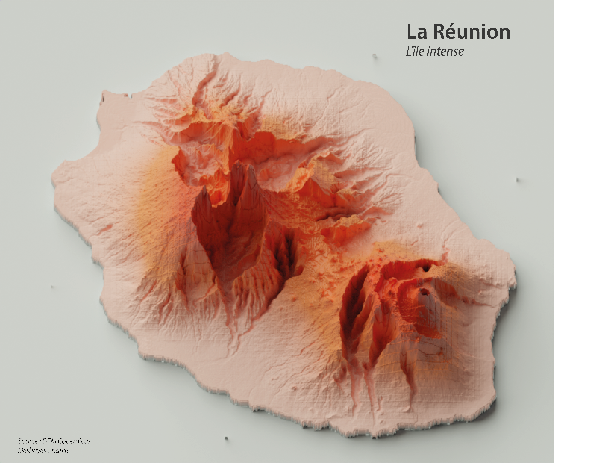

Les gares en France

La carte ci-dessus met en avant le maillage des gares ferrorviaires en France métropolitaine. Chaque cercle représente une gare et la taille du cercle varie selon la nombre de voyageurs passés par celle-ci durant l'année 2025. Les données proviennent de la SNCF.
Barcelone

Cette carte présente la morphologie urbaine atypique de Barcelone à travers l'empreinte de son bati. Les données proviennent d'OpenStreetMap
Réseaux de métro

Cette carte met en avant les réseaux de métro de New-York et de Paris dans le but de les comparer visuellement.
L'île intense

Cartographie 3D du relief de l'île de la Réunion réalisée avec l'outil Blender.